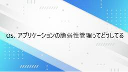

SIOS Tech Lab
https://tech-lab.sios.jp
サイオステクノロジーのエンジニアが クラウド、OSS、認証に関する様々な情報を提供します。
フィード

今こそ読んでほしい『理科系の作文技術』
SIOS Tech Lab
はじめに PSSLの佐々木です。 最近、仕事の中や技術ブログ、登壇資料を見ていてこんな場面に出会うことが増えました。 チャットで質問したら、AIが生成したと思われる長文がそのまま貼り付けられて返ってくる 資料が、AIに作 ...今こそ読んでほしい『理科系の作文技術』 first appeared on SIOS Tech Lab.
1日前
個人作業から“本当のチーム”へ。10日間の開発で学んだチームワークと伝える技術
SIOS Tech Lab
自己紹介とインターン参加の理由 自己紹介 公立はこだて未来大学 システム情報科学部 情報システムコース 3年の吉川諒一です。 普段はコンピュータサイエンスの基礎からシステム構築の応用技術まで幅広く学んでいます。 現在は ...個人作業から“本当のチーム”へ。10日間の開発で学んだチームワークと伝える技術 first appeared on SIOS Tech Lab.
3日前

OS、アプリケーションの脆弱性管理ってどうしてる
SIOS Tech Lab
こんにちは。サイオステクノロジーの橋本です。 昨今、各ソフトウェアで深刻な脆弱性が多数報告されており、セキュリティ担当者の方は日々の対応に追われているのではないでしょうか。 本記事では、Linuxサーバーにおけるパッケー ...OS、アプリケーションの脆弱性管理ってどうしてる first appeared on SIOS Tech Lab.
3日前

PHP2Shellの影響確認と更新手順
SIOS Tech Lab
はじめに 本記事では、PHP の深刻な脆弱性「PHP2Shell（CVE-2026-109618 / CVE-2026-109619）」について、管理対象のサーバーが影響を受けるかどうかの調査手順と、更新手順をまとめます ...PHP2Shellの影響確認と更新手順 first appeared on SIOS Tech Lab.
5日前
推測ではなく「実測」で勝負する。LLMパフォーマンスチューニングとCI/CD導入でチームの生産性を底上げした話
SIOS Tech Lab
サイオステクノロジーのインターンシップに参加した、東京電機大学の森田です。 今回のハッカソン型インターンでは、チーム開発の推進とアプリ実装を主導しました。 本記事では、AIをコアに組み込んだプロダクト開発の裏側と、開発を ...推測ではなく「実測」で勝負する。LLMパフォーマンスチューニングとCI/CD導入でチームの生産性を底上げした話 first appeared on SIOS Tech Lab.
6日前

Zabbix のデータベースとして TimescaleDB を使用する
SIOS Tech Lab
こんにちは。サイオステクノロジー OSS サポート担当 山本です。 今回は TimescaleDB の具体的な活用例として、統合監視ツール「Zabbix」のバックエンドデータベースに採用する方法をご紹介します。 ■ざっく ...Zabbix のデータベースとして TimescaleDB を使用する first appeared on SIOS Tech Lab.
6日前

PHPにおける深刻な脆弱性 PHP2Shell について
SIOS Tech Lab
はじめに 2026 年 10 月 21 日、PHP において深刻なリモートコード実行 (RCE) の脆弱性 2 件 (CVE-2026-109618、CVE-2026-109619、通称「 PHP2Shell 」) が公 ...PHPにおける深刻な脆弱性 PHP2Shell について first appeared on SIOS Tech Lab.
8日前
ラズパイとAIで作ったオレの格安高音質オーディオ環境、控えめにいって最高すぎる〜Raspberry Pi + Easy Effects で自作DSP、音の調整はAIにおまかせ〜
SIOS Tech Lab
武井でございます。 ちゃんとした DSP（デジタル信号処理の機材）を買おうとすると、数万円から10万円近くします。DSP とは、スピーカーの音を補正したり、エフェクトをかけたりする機材です。イコライザーやコンプレッサーな ...ラズパイとAIで作ったオレの格安高音質オーディオ環境、控えめにいって最高すぎる〜Raspberry Pi + Easy Effects で自作DSP、音の調整はAIにおまかせ〜 first appeared on SIOS Tech Lab.
9日前
知っておくとちょっと便利！Linuxでswap領域を作って検証コストを抑える方法
SIOS Tech Lab
AWS（EC2）などで検証環境を構築しているとき、「メモリがちょっと足りなくて処理が止まってしまった…」という経験はありませんか？ 今回は、そんな時に役立つ「swap（スワップ）領域の作成方法」と、検証コストを賢く抑える ...知っておくとちょっと便利！Linuxでswap領域を作って検証コストを抑える方法 first appeared on SIOS Tech Lab.
10日前
【2026年10月】OSSサポートエンジニアが気になった！OSS最新ニュース
SIOS Tech Lab
こんにちは！ 今月も「OSSのサポートエンジニアが気になった！OSSの最新ニュース」をお届けします。 KDDI総合研究所は2026年10月16日、Linuxシステム上でランサムウェアによって暗号化されたファイルを復元する ...【2026年10月】OSSサポートエンジニアが気になった！OSS最新ニュース first appeared on SIOS Tech Lab.
10日前